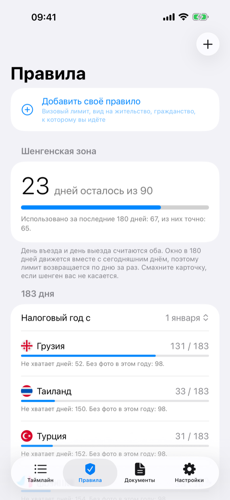
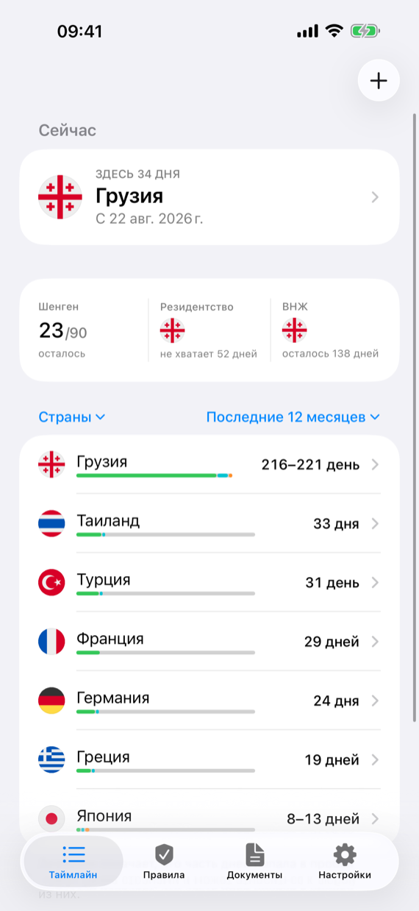
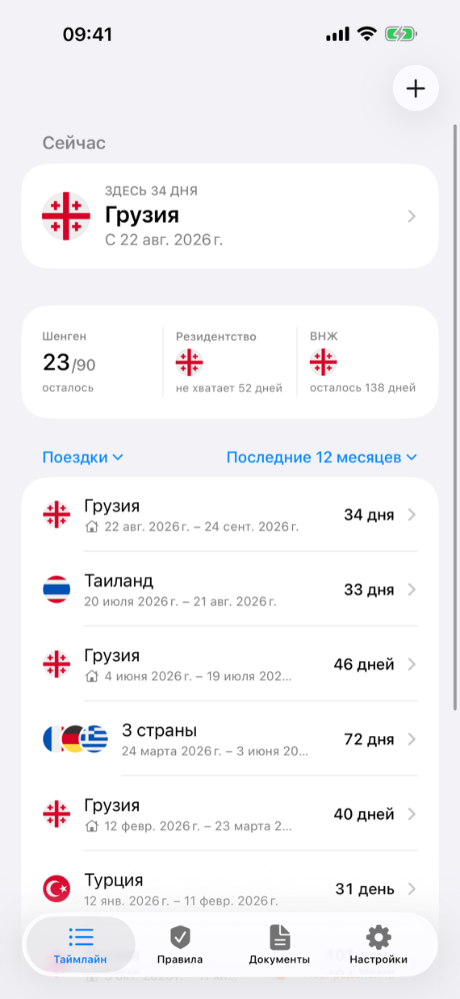

Калькулятор дней в Турции
Сколько вы можете оставаться в Турции?
Турция считает 90 дней за любые 180, а гражданам России вдобавок нельзя оставаться дольше 60 дней за один въезд. Выберите паспорт, введите поездки и узнайте, до какого числа можно остаться.
Эти даты уже есть в ваших фото
Поездки, вбитые по памяти, — главная причина ошибок в подсчёте. Presence для iPhone и iPad читает даты и места, которые уже сохранила камера, и считает каждый день в каждой стране. Потом сам ведёт счёт по каждому лимиту — и по визе в вашем паспорте тоже — и предупреждает до того, как он закончится. Всё на устройстве, без аккаунта.
Скачать Presence в App Store


| Паспорт | Сколько можно |
|---|---|
| Россия | 60 дней за въезд и 90 дней за любые 180 |
| Украина, ЕС, Великобритания, США и большинство других безвизовых паспортов | 90 дней за любые 180 |
Обнуляет ли выезд лимит?
Нет. 180 дней отсчитываются назад от каждого дня, поэтому короткий выезд не даёт новых 90. Для граждан России новый въезд начинает новые 60 дней, но только в пределах того, что ещё оставляют 90 за 180.
Пример?
Гражданин России провёл в Турции 60 дней, выехал и вернулся через десять дней. Эти 60 дней ещё в последних 180, поэтому можно только 30 — калькулятор покажет точную последнюю дату.
Как остаться дольше?
С видом на жительство: подать на него нужно в Турции, пока безвизовые дни не закончились.